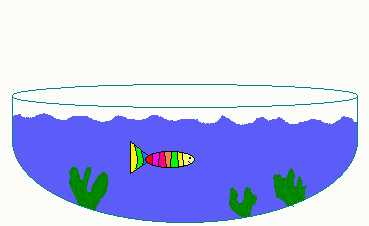

I’ve dug up a very old website (Feb 2002) of mine. It was clearly an early backup since there was almost no content. I made it using Microsoft Frontpage, which I can indeed vaguely remember. I also found a WS_FTP.LOG file with a single line: 2002.02.27 16:17 B D:\Mijn documenten\JP\index.html --> home.hccnet.nl / index.html. I tried finding it on the Internet Archive, but I could only find a slightly later crawl, in which this website had been removed.
I also found this amazing GIF, probably made by my younger brother Rene (because of the filename; “visrene.gif”, translated: “fish Rene”):
